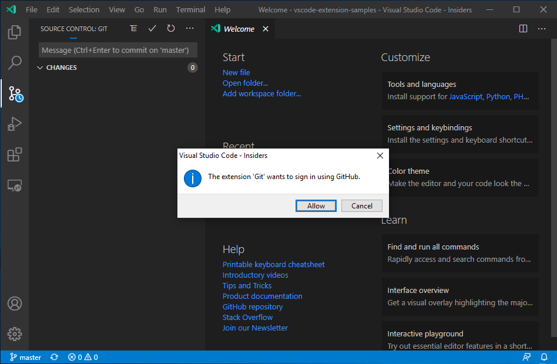

Working with GitHub in VS Code
Using GitHub with Visual Studio Code lets you share your source code and collaborate with others. GitHub integration is provided through the GitHub Pull Requests and Issues extension.
Install the GitHub Pull Requests and Issues extension
To get started with the GitHub in VS Code, you'll need to create an account and install the GitHub Pull Requests and Issues extension. In this topic, we'll demonstrate how you can use some of your favorite parts of GitHub without leaving VS Code.
If you're new to source control and want to start there, you can learn about VS Code's source control integration.
Getting started with GitHub Pull Requests and Issues
Once you've installed the GitHub Pull Requests and Issues extension, you'll need to sign in. Follow the prompts to authenticate with GitHub in the browser and return to VS Code.
If you are not redirected to VS Code, you can add your authorization token manually. In the browser window, you will receive your authorization token. Copy the token, and switch back to VS Code. Select Signing in to github.com... in the Status bar, paste the token, and hit kbstyle(Enter).
Setting up a repository
Cloning a repository
You can search for and clone a repository from GitHub using the Git: Clone command in the Command Palette (kb(workbench.action.showCommands)) or by using the Clone Repository button in the Source Control view (available when you have no folder open).
Authenticating with an existing repository
Enabling authentication through GitHub happens when you run any Git action in VS Code that requires GitHub authentication, such as pushing to a repository that you're a member of or cloning a private repository. You don't need to have any special extensions installed for authentication; it is built into VS Code so that you can efficiently manage your repository.
When you do something that requires GitHub authentication, you'll see a prompt to sign in:

Follow the steps to sign into GitHub and return to VS Code. If authenticating with an existing repository doesn't work automatically, you may need to manually provide a personal access token. See Personal Access Token authentication for more information.
Note that there are several ways to authenticate to GitHub, including using your username and password with two-factor authentication (2FA), a personal access token, or an SSH key. See About authentication to GitHub for more information and details about each option.
Note: If you'd like to work on a repository without cloning the contents to you local machine, you can install the GitHub Repositories extension to browse and edit directly on GitHub. You can learn more below in the GitHub Repositories extension section.
Editor integration
Hovers
When you have a repository open and a user is @-mentioned, you can hover over that username and see a GitHub-style hover.
There is a similar hover for #-mentioned issue numbers, full GitHub issue URLs, and repository specified issues.
Suggestions
User suggestions are triggered by the "@" character and issue suggestions are triggered by the "#" character. Suggestions are available in the editor and in the Source Control view's input box.
The issues that appear in the suggestion can be configured with the GitHub Issues: Queries (githubIssues.queries) setting. The queries use the GitHub search syntax.
You can also configure which files show these suggestions using the settings GitHub Issues: Ignore Completion Trigger (githubIssues.ignoreCompletionTrigger) and GitHub Issues: Ignore User Completion Trigger (githubIssues.ignoreUserCompletionTrigger). These settings take an array of language identifiers to specify the file types.
// Languages that the '#' character should not be used to trigger issue completion suggestions.
"githubIssues.ignoreCompletionTrigger": [
"python"
]
Pull requests
From the Pull Requests view you can view, manage, and create pull requests.
The queries used to display pull requests can be configured with the GitHub Pull Requests: Queries (githubPullRequests.queries) setting and use the GitHub search syntax.
"githubPullRequests.queries": [
{
"label": "Assigned To Me",
"query": "is:open assignee:${user}"
},
Creating Pull Requests
You can use the GitHub Pull Requests: Create Pull Request command or use the + button in the Pull Requests view to create a pull request. If you have not already pushed your branch to a remote, the extension will do this for you. You can use the last commit message, the branch name, or write a custom title for the pull request. If your repository has a pull request template, this will automatically be used for the description.
Reviewing
Pull requests can be reviewed from the Pull Requests view. You can assign reviewers and labels, add comments, approve, close, and merge all from the pull request description.
From the description page, you can also easily checkout the pull request locally using the Checkout button. This will add a new Changes in Pull Request view from which you can view diffs of the current changes as well as all commits and the changes within these commits. Files that have been commented on are decorated with a diamond icon. To view the file on disk, you can use the Open File inline action.
The diff editors from this view use the local file, so file navigation, IntelliSense, and editing work as normal. You can add comments within the editor on these diffs. Both adding single comments and creating a whole review is supported.
Issues
Creating issues
Issues can be created from the + button in the Issues view and by using the GitHub Issues: Create Issue from Selection and GitHub Issues: Create Issue from Clipboard commands. They can also be created using a Code Action for "TODO" comments.
You can configure the trigger for the Code Action using the GitHub Issues: Create Issue Triggers (githubIssues.createIssueTriggers) setting.
The default issue triggers are:
"githubIssues.createIssueTriggers": [
"TODO",
"todo",
"BUG",
"FIXME",
"ISSUE",
"HACK"
]
Working on issues
From the Issues view, you can see your issues and work on them. By default, when you start working on an issue, a branch will be created for you. You can configure the name of the branch using the GitHub Issues: Working Issue Branch (githubIssues.workingIssueBranch) setting. The commit message input box in the Source Control view will be populated with a commit message, which can be configured with GitHub Issues: Working Issue Format SCM (githubIssues.workingIssueFormatScm).
If your workflow doesn't involve creating a branch, or if you want to be prompted to enter a branch name every time, you can skip that step by turning off the GitHub Issues: Use Branch For Issues (githubIssues.useBranchForIssues) setting.
GitHub Repositories extension
The GitHub Repositories extension lets you quickly browse, search, edit, and commit to any remote GitHub repository directly from within Visual Studio Code, without needing to clone the repository locally. This can be fast and convenient for many scenarios, where you just need to review source code or make a small change to a file or asset.
Opening a repository
Once you have installed the GitHub Repositories extension, you can open a repository with the GitHub Repositories: Open Repository... command from the Command Palette (kb(workbench.action.showCommands)) or by clicking the Remote indicator in the lower left of the Status bar.
When you run the Open Repository command, you then choose whether to open a repository from GitHub, open a Pull Request from GitHub, or reopen a repository that you had previously connected to.
If you haven't logged into GitHub from VS Code before, you'll be prompted to authenticate with your GitHub account.
You can provide the repository URL directly or search GitHub for the repository you want by typing in the text box.
Once you have selected a repository or Pull Request, the VS Code window will reload and you will see the repository contents in the File Explorer. You can then open files (with full syntax highlighting and bracket matching), make edits, and commit changes, just like you would working on a local clone of a repository.
One difference from working with a local repository is that when you commit a change with the GitHub Repository extension, the changes are pushed directly to the remote repository, similar to if you were working in the GitHub web interface.
Another feature of the GitHub Repositories extension is that every time you open a repository or branch, you get the up-to-date sources available from GitHub. You don't need to remember to pull to refresh as you would with a local repository.
Switching branches
You can easily switch between branches by clicking on the branch indicator in the Status bar. One great feature of the GitHub Repositories extension is that you can switch branches without needing to stash uncommitted changes. The extension remembers your changes and reapplies them when you switch branches.
Remote Explorer
You can quickly reopen remote repositories with the Remote Explorer available on the Activity bar. This view shows you the previously opened repositories and branches.
Create Pull Requests
If your workflow uses Pull Requests, rather than direct commits to a repository, you can create a new PR from the Source Control view. You'll be prompted to provide a title and create a new branch.
Once you have created a Pull Request, you can use the GitHub Pull Request and Issues extension to review, edit, and merge your PR as described earlier in this topic.
Virtual file system
Without a repository's files on your local machine, the GitHub Repositories extension creates a virtual file system in memory so you can view file contents and make edits. Using a virtual file system means that some operations and extensions which assume local files are not enabled or have limited functionality. Features such as tasks, debugging, and integrated terminals are not enabled and you can learn about the level of support for the virtual file system via the features are not available link in the Remote indicator hover.
Extension authors can learn more about running in a virtual file system and workspace in the Virtual Workspaces extension author's guide.
Continue Working on...
Sometimes you'll want to switch to working on a repository in a development environment with support for a local file system and full language and development tooling. The GitHub Repositories extension makes it easy for you to clone the repository locally or into a Docker container (if you have Docker and the Microsoft Docker extension installed) with the GitHub Repositories: Continue Working on... command available from the Command Palette (kb(workbench.action.showCommands)) or by clicking on the the Remote indicator in the Status bar.
If you are using the browser-based editor, the "Continue Working On..." command has the options to open the repository locally or within a cloud-hosted environment in GitHub Codespaces.